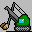
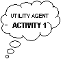
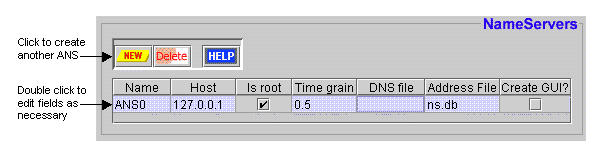
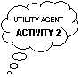
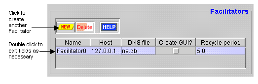
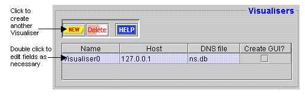
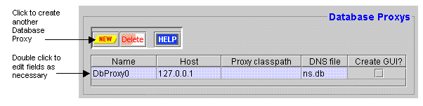

The Zeus Agent Building Toolkit |
The Application Realisation Guide |
4 The Utility Agent Configuration Stage
By now the task-specific agents will have been defined, leaving
us to consider the agents that will provide the support infrastructure: these
are known as the utility agents. This stage requires that the following design
decisions should have already been taken:
-
how the name resolution service will be realised
-
whether there will be a Facilitator, and if so, what are its attributes
-
whether there will be a Visualiser
-
whether agent activity will be stored persistently
The number and nature of the utility agents needed is dependent on the application.
The Role Modelling guide and its case studies provide examples of how to configure
utility agents appropriately. Each type of utility agent can be configured through
the 'Utility Agent' pane of the Code Generator window.

To open the Code Generator tool select the "Generate Code" menu option or the equivalent button
from the Project Options toolbar. You will now be able to perform the main
activities of this stage, namely:
|  |
UTIL-1: Configuring the Name Servers |
An agent society must possess at least one Agent Name Server (ANS). The ANSs
maintain a registry of known agents, enabling them to map agent identities to
a logical network location. This is necessary because agents only know the
names of their acquaintances and not their locations. Name Server agents are
created and configured using the 'Name Servers' panel, as shown in Figure 4.1.
|  |
| Figure 4.1: The Name Servers Entry Panel |
By default the Name Servers table has one entry, referring
to a single ANS agent, this should suffice for small agent societies. However
as the ANS is vital to all agent communication it is a potential bottleneck,
and so it may be desirable to have multiple ANSs to support larger societies,
or to provide a degree of redundancy in case one fails.
 To add
another ANS, click the New button, this will create another entry in the table
that can be edited as required.
To add
another ANS, click the New button, this will create another entry in the table
that can be edited as required.
The Host field shows the I.P address (i.e. network location)
of the machine that the ANS will run on, this defaults to the I.P address of
the machine that is currently running the Generator tool. More than one ANS
can reside on a single host.
To change the location of
the ANS double click on the Host field and enter the new value. If you don't
know the I.P address of machine, use the ping command to discover it.
If there is more than one ANS the developer can choose which
is the root server, the only operational difference of changing this is the
root server will provide the time-grain value (see below) and be responsible
for maintaining the society-wide clock.
To select or deselect an agent as the root, click on the
'Is Root?' field. Note: one ANS must be selected as the root.
The agent selected as the root will provide the time-grain
value for the entire society, (for a discussion of the time-grain and its implications
see section 3 of this document).
Change
the time-grain by double clicking the Time Grain field, the new value should
be expressed in minutes and be a non-negative real number. For instance to set
the time-grain to 20 seconds 0.33 should be entered. Note: only the time grain
field of the root ANS can be edited.
As the root ANS serves as a reference point for all other
agents in the society, there must be a means to inform other agents where the
root ANS is located. Hence when the root ANS starts, it will write its network
location into a file called the Default Name Server (DNS) file. If agents share
a network file system it is recommended that the DNS file be expressed in terms
of a network pathname.
To edit
the pathname to which the root ANS will write the DNS, double click on the Address
File field of the root agent.
To make non-root name servers aware of the root ANS, they
must be told where to find the root's DNS file. This pathname is entered into
the DNS File field. If this is not a network accessible file, it will need
to be copied to the local file system of the agent concerned, and hence this
field will contain its local pathname and filename.
To edit
the pathname from which the DNS file will be read, double click on the DNS File
field of the root agent.
The developer can choose whether Agent Name Servers will
be created with a graphical user interface, (GUI). The GUI will display information
on the server's activity, and provide some control functions. This may be useful
for debugging and monitoring, but unnecessary if the ANS is to run in the background.
To create
an ANS with a GUI click the 'Create GUI?' checkbox field, click again to
deselect.
|  |
UTIL-2: Configuring the Facilitators |
Whereas every agent society must have an ANS, there is no such obligation for
Facilitators. Whether Facilitators are included depends on the nature of the
application; if all agent acquaintances and abilities have been determined at
design-time and will not change, then a Facilitator may not be necessary. However,
this situation is unlikely, and so most applications will possess at least one
Facilitator, which can be created and configured using the 'Facilitators' panel,
as shown in Figure 4.2.
|  |
| Figure 4.2: The Facilitator Entry Panel |
By default the Facilitators table has one entry, one should
suffice for small-scale applications, but as it could be a potential bottleneck
it may be desirable to have multiple Facilitators for larger applications, or
where some redundancy is wanted in case of failure.
To add
another Facilitator, click the New button, this will create another entry in
the table that can be edited as required.
The Host field shows the I.P address (i.e. network location)
of the machine that the Facilitator will run on, this defaults to the I.P address
of the machine that is currently running the Generator tool. More than one
Facilitator can reside on a single host.
To change the location of
a Facilitator double click on the Host field and enter the new value. If you
don't know the I.P address of machine, use the ping command to discover it.
To make Facilitators aware of the root ANS, they must be
told where to find its DNS file. This pathname is entered into the DNS File
field. If this is not a network accessible file, it will need to be copied
to the Facilitator's local file system, and its local pathname and filename
entered in this field.
To edit
the pathname from which the DNS file will be read, double click on the DNS File
field.
The developer can choose whether Facilitators will be created
with a graphical user interface, (GUI). The GUI will display information on
the agent's activity, and provide some control functions. This may be useful
for debugging and monitoring, but unnecessary if the agent is to run in the
background.
To create
a Facilitator GUI click the 'Create GUI?' checkbox field, click again to deselect.
How to Make the Facilitator Reactive
The normal behaviour of a Facilitator is to retrieve the
list of known agents from an ANS, and then send a message to each of the agents
asking them to reply with details of the abilities they are currently able to
perform. The interval between these queries is set through the Recycle Period
field.
Change
the cycle interval by double clicking the Recycle Period field, the new value
should be expressed in minutes and be a non-negative real number.
If the cycle period is set to 0 the Facilitator will cease
its proactive querying of agents and become totally reactive. In this case
the normal roles are reversed and the agents must behave proactively, periodically
advertising their abilities to the Facilitator. This will require altering
the agent's normal behaviour, (see
How to Instruct an Agent to Do Something).
|
UTIL-3: Configuring the Visualisers |
Like Facilitators, there is no requirement for an application to contain a Visualiser.
Whether one is included depends on whether the application is to be debugged,
monitored or analysed. Given the Visualiser offers some very useful functionality
for free it will usually be included in the list of agents to be created. Visualisers
are created and configured using the 'Visualisers' panel, shown in Figure 4.3.
|  |
| Figure 4.3: The Visualiser Entry Panel |
By default the Visualisers table has one entry, whether more
than one is necessary will probably depend on the number of locations where
users will want to visualise some aspect of the society. Another influencing
factor is that Visualisers are not essential to the operation of an agent society,
and so as the implications of failure are less serious there is less need for
redundancy.
To add another Visualiser, click the New button, this will create another entry in
the table that can be edited as required.
The Host field shows the I.P address (i.e. network location)
of the machine that the Visualiser will run on, this defaults to the I.P address
of the machine that is currently running the Generator tool. As the Visualiser
windows will occupy most of a host's screen space, there is likely to be only
one Visualiser per host (although this is not enforced).
To change the location of
a Visualiser double click on the Host field and enter the new value. If you
don't know the I.P address of machine, use the ping command to discover it.
To make Visualisers aware of the root ANS, they must be told
where to find its DNS file. This pathname is entered into the DNS File field.
If this is not a network accessible file, it will need to be copied to the Visualiser's
local file system, and its local pathname and filename entered in this field.
To edit the pathname from which the DNS file will be read,
double click on the DNS File field.
The developer can choose whether Visualisers will be created
with a GUI that will display information on the Visualiser agent's activity;
(this will be created separately from the windows of the Visualiser tools).
This GUI may be useful for debugging and understanding how the agent works,
but otherwise this option should be ignored.
To create
a Visualiser with an activity GUI click the 'Create GUI?' checkbox field; click
again to deselect.
|
UTIL-4: Configuring the Database Proxies |
A Database Proxy (DP) agent provides Visualiser agents with a means of persistent
storing agent session information. A DP can serve as an interface to a 3rd
party database, or translate the information to be stored into its own ASCII
file format. Database Proxies are created and configured through the panel
of the same name, shown in Figure 4.4, although there is no entry there by default.
|  |
| Figure 4.4: The Database Proxy Entry Panel |
Whether a DP is included in an application depends on whether
the activities of the agents need to be logged. Hence a DP will typically only
be created if the society is being debugged or audited, and a DP will not be
created by default.
To add a Database Proxy, click the New button, this will create an entry in the table
that can be edited as required.
The Host field shows the I.P address (i.e. network location)
of the machine that the Database Proxy will run on, this defaults to the I.P
address of the machine that is currently running the Generator tool. If the
DP is to be connected to a proprietary database the address entered will probably
need to be the address of the machine that hosts the database.
To change the location of
the DP double click on the Host field and enter the new value. If you don't
know the I.P address of machine, use the ping command to discover it.
Like the other utility agents the DPs must be aware of the
root ANS. Thus the location of the DNS file should be entered into the DNS
File field. If this is not a network accessible file, it will need to be copied
to the DP's local file system.
To edit
the pathname from which the DNS file will be read, double click on the DNS File
field.
The developer can choose whether the DP will be created with
a GUI that will display information on its activities. This GUI may be useful
for debugging and understanding how the agent works, but otherwise this option
should be ignored.
To create
an activity GUI click the 'Create GUI?' checkbox field; click again to deselect.
How to Connect a Database Proxy to a Storage Medium
The Database Proxy is connected to its storage media through
a Java class that implements the methods of the storage interface. The ZEUS
toolkit provides two predefined storage interfaces:
zeus.ext.FlatFile : this writes saved information into a conventional ASCII file
zeus.ext.Oracle : this writes information into an Oracle Database using a ODBC connection
To choose the storage mechanism to be used, double click on the Proxy Classpath field
and enter the full pathname of the appropriate class. If this is not entered
the DP will not be able to save information.